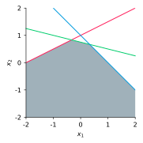
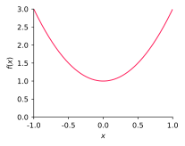
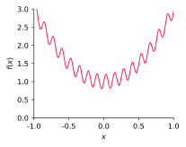
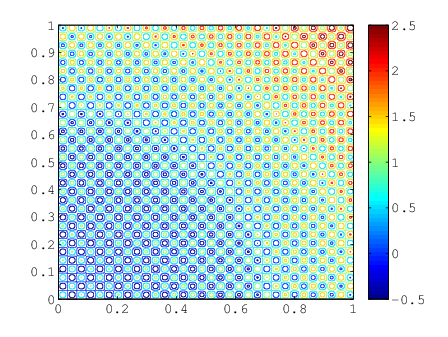
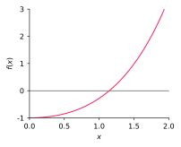
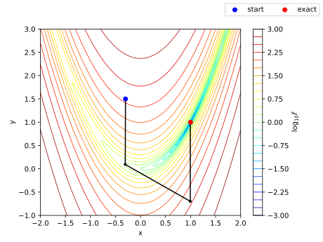
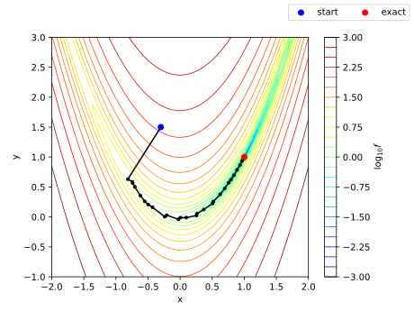
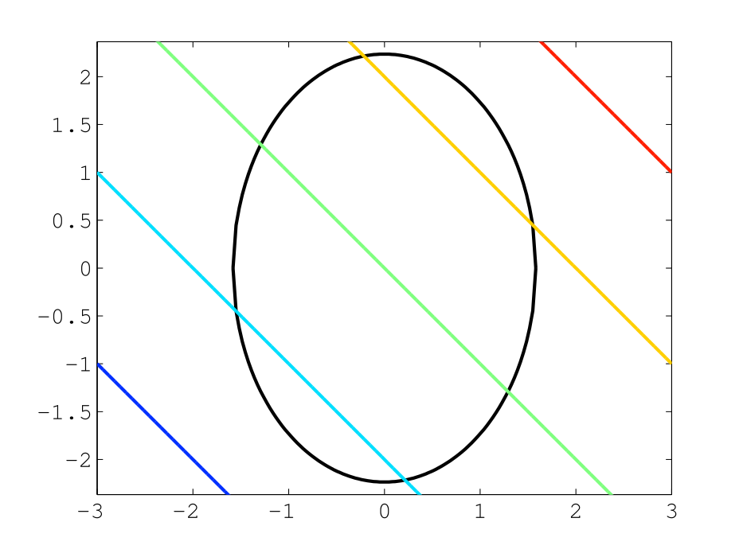
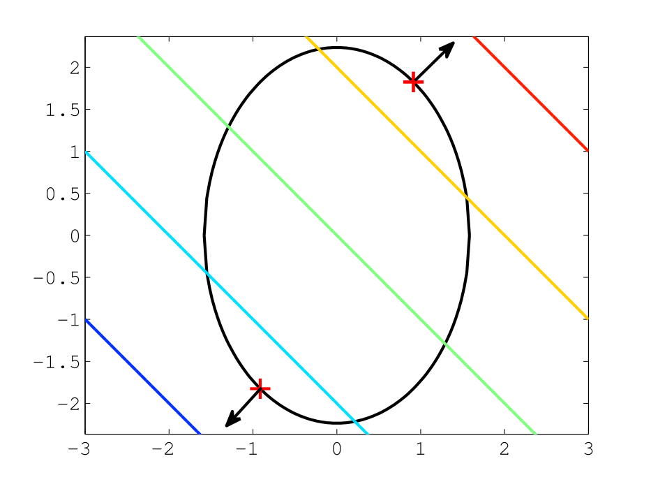

Applied Mathematics 205
Unit 4. Optimization
Lecturer: Petr Karnakov
November 2, 2022
Motivation
- This unit will cover nonlinear equations and optimization
- So far we have mostly focused on linear problems
- linear least squares (linear combination of basis functions)
- linear physical laws (idealized behavior, small deformations)
- discretizations of linear PDEs (wave equation, heat equation)
- However, important applications lead to nonlinear problems
- nonlinear least squares (nonlinear dependency on parameters)
- nonlinear physical models (realistic materials, large deformations)
- discretizations of nonlinear PDEs (Navier-Stokes)
Motivation: Nonlinear Equations
- Some familiar problems can be reduced to nonlinear equations
- For example, computing the points and weights of Gauss quadrature \[ \int_{-1}^1 f(x)\text{d}x \approx \sum_{k=0}^n w_k f(x_k) \] with $2n+2$ unknown parameters $x_0,\ldots,x_n$ and $w_0,\ldots,w_n$
- Require that quadrature is exact on monomials of degree up to $2n+1$
Motivation: Nonlinear Equations
- For $n=1$, this leads to a system of nonlinear equations \[ \begin{aligned} w_0 + w_1 &= \int_{-1}^1 1 \text{d}x = 2\\ w_0x_0 + w_1 x_1&= \int_{-1}^1 x \text{d}x = 0\\ w_0x_0^2 + w_1x_1^2 &= \int_{-1}^1 x^2 \text{d}x = 2/3\\ w_0x_0^3 + w_1x_1^3 &= \int_{-1}^1 x^3 \text{d}x = 0\end{aligned} \]
Motivation: Nonlinear Equations
- A general system of $m$ equations for $n$ unknowns \[ F(x) = 0 \] where $F : \mathbb{R}^n \to \mathbb{R}^m$
- We will focus on the case $m=n$,
i.e. equal number of equations and unknowns - Cases $m\neq n$ can be formulated as nonlinear least squares
Motivation: Nonlinear Equations
- One class of nonlinear equations is polynomial equations,
i.e. $F(x)$ is a polynomial - The simplest case is a quadratic equation \[ ax^2 + bx + c = 0 \]
- A closed-form solution is given by \[ x = \frac{-b \pm \sqrt{b^2 - 4ac}}{2a} \]
Motivation: Nonlinear Equations
- There are also closed-form solutions for polynomial equations
of degree three and four, due to Ferrari and Cardano (~1540) - However, the Abel–Ruffini theorem states that equations
of degree five or higher have no general solution in radicals - Therefore, they have to be solved numerically with an iterative algorithm
Motivation: Nonlinear Equations
- There are many iterative methods for nonlinear equations
- One is the bisection method for a scalar equation
\[ f(x) = 0 \] where $f \in C[a,b]$ - Assume $f(a)f(b)<0$ and bisect the interval
depending on the sign of $f(\frac{a+b}{2})$
Motivation: Nonlinear Equations
def f(x):
return x * x - 4 * np.sin(x)
# Initial interval, assume f(a)*f(b)<0.
a = 1
b = 3
tol = 1e-3
# Bisection search.
while b - a > tol:
print('a={:.5f} b={:.5f} f(a)={:.5f} f(b)={:.5f}'
.format(a, b, f(a), f(b)))
c = 0.5 * (b + a)
if f(a) * f(c) < 0:
b = c
else:
a = c
a=1.00000 b=3.00000 f(a)=-2.36588 f(b)=8.43552
a=1.00000 b=2.00000 f(a)=-2.36588 f(b)=0.36281
a=1.50000 b=2.00000 f(a)=-1.73998 f(b)=0.36281
a=1.75000 b=2.00000 f(a)=-0.87344 f(b)=0.36281
a=1.87500 b=2.00000 f(a)=-0.30072 f(b)=0.36281
a=1.87500 b=1.93750 f(a)=-0.30072 f(b)=0.01985
a=1.90625 b=1.93750 f(a)=-0.14326 f(b)=0.01985
a=1.92188 b=1.93750 f(a)=-0.06241 f(b)=0.01985
a=1.92969 b=1.93750 f(a)=-0.02145 f(b)=0.01985
a=1.93359 b=1.93750 f(a)=-0.00085 f(b)=0.01985
a=1.93359 b=1.93555 f(a)=-0.00085 f(b)=0.00949
Motivation: Nonlinear Equations
- Bisection is a robust method in 1D,
but it needs an initial guess $f(a)f(b)<0$
and does not generalize to higher dimensions - We will consider alternative methods
- fixed-point iteration
- Newton’s method
Motivation: Optimization
- A related topic is optimization
- Has important applications in science and engineering
- Examples
- find the shape of a racing car that maximizes downforce
- design a bridge to minimize its weight
- find the path of an airplane that minimizes fuel consumption
- Solving nonlinear equations can be viewed
as optimization of the residuals
Motivation: Optimization
- Optimization can be constrained,
i.e. parameters have to satisfy equations or inequalities - Examples
- find the shape of a racing car that maximizes downforce,
subject to a constant drag - design a bridge to minimize its weight,
subject to a constant critical load - find the path of an airplane that minimizes fuel consumption,
but avoids certain territories
- find the shape of a racing car that maximizes downforce,
Motivation: Optimization
- All these problems can be formulated as constrained minimization
Given an objective function $f : \mathbb{R}^n \to \mathbb{R}$ and a set $S \subset \mathbb{R}^n$,
find $x^\ast \in S$ such that $f(x^\ast) \leq f(x)$ $\forall x \in S$ - Here $S$ is the feasible set which describes the constraints,
usually defined by equations or inequalities - If $S = \mathbb{R}^n$, then the minimization is unconstrained
- Maximization of $f$ is equivalent to minimization of $-f$
Motivation: Optimization
- The standard way to write an optimization problem is
\[
\min_{x} f(x) \text{ subject to } g(x) = 0 \text{ and } h(x) \leq 0
\]
with
- objective function $f : \mathbb{R}^n \to \mathbb{R}$
- equality constraints $g : \mathbb{R}^n \to \mathbb{R}^m$
- inequality constraints $h : \mathbb{R}^n \to \mathbb{R}^p$
Motivation: Optimization
- For example, consider a cylinder with radius $x_1$ and height $x_2$
- Minimize the surface area of a cylinder subject to a constraint on its volume
\[ \min_x f(x_1,x_2) = 2\pi x_1(x_1 + x_2) \] \[ \text{ subject to } g(x_1,x_2) = \pi x_1^2 x_2 - V = 0 \]
- We will return to this example later
Motivation: Optimization
- If $f$, $g$ and $h$ are all affine (i.e. $f(x) = Ax + b$, linear plus constant),
then the optimization problem is called a linear programming - Here the term “program” is a synonym for “plan”,
has nothing to do with computer software - The feasible set is a polyhedron and the minimum is found on its vertex

Motivation: Optimization
- If the objective function or any of the constraints are nonlinear
then we have a nonlinear optimization problem or nonlinear programming - We will consider several different approaches to nonlinear optimization
- Optimization routines typically use local information
about a function to iteratively approach its local minimum
Motivation: Optimization
- In some cases an optimizer can find a global minimum
- Extra conditions on the function (e.g. convexity) can help

Motivation: Optimization
- But in general, global optimization is difficult
- The optimizer can get “stuck” in local minimum

Motivation: Optimization
- This can get even harder in higher dimensions

Motivation: Optimization
- We will focus on methods for finding local minima
- Global optimization is important, but not possible in general
without extra conditions on the objective function - Global optimization usually relies on heuristics
- try several different initial guesses (multistart methods)
- simulated annealing (add decaying noise)
- genetic methods (use a hierarchy of samples)
Nonlinear Equations
Fixed-Point Iteration
- Consider iteration \[ x_{k+1} = g(x_k) \]
- For example, recall Heron’s method for finding $\sqrt{a}$ from HW0 \[ x_{k+1} = \frac{1}{2}\left( x_k + \frac{a}{x_k}\right) \]
- Denote $g_\text{heron}(x) = \frac{1}{2}\left( x + a/x\right)$
Fixed-Point Iteration
- Suppose $\alpha\in\mathbb{R}$ is such that $g(\alpha) = \alpha$, then we call $\alpha$ a fixed point of $g$
- For example, we see that $\sqrt{a}$ is a fixed point of $g_\text{heron}$ since \[ g_\text{heron}(\sqrt{a}) = \frac{1}{2}\left( \sqrt{a} + a/\sqrt{a}\right) = \sqrt{a} \]
- A fixed-point iteration terminates once a fixed point is reached,
since if $g(x_k) = x_k$ then we get $x_{k+1} = x_k$ - Also, if $x_{k+1} = g(x_k)$ converges as $k\to\infty$, it must converge to a fixed point
- Let $\alpha = \lim_{k\to\infty}x_k$, then \[ \alpha = \lim_{k\to \infty}x_{k+1} = \lim_{k\to \infty}g(x_k) = g\Big( \lim_{k\to \infty}x_{k} \Big) = g(\alpha) \]
Fixed-Point Iteration
- Therefore, for example, if Heron’s method converges, it converges to $\sqrt{a}$
- There are sufficient conditions for convergence of a fixed-point iteration
- Recall that $g$ satisfies a Lipschitz condition in an interval $[a,b]$ if \[ |g(x) - g(y)| \leq L |x-y|, \quad \forall x,y \in [a,b] \] for some $L>0$
- If $L<1$, then $g$ is called a contraction
Fixed-Point Iteration
- Theorem: Suppose that $g$ is a contraction on $[\alpha - \delta, \alpha + \delta]$
and $\alpha$ is a fixed point of $g$ (i.e. $g(\alpha) = \alpha$), where $\alpha\in\mathbb{R}$ and $\delta>0$
Then the fixed point iteration converges to $\alpha$ for any $x_0 \in [\alpha - \delta, \alpha + \delta]$ - Proof: Take $L<1$ from the Lipschitz condition. Then \[ |x_k - \alpha | = |g(x_{k-1}) - g(\alpha)| \leq L|x_{k-1} - \alpha|, \] which implies \[ |x_k - \alpha | \leq L^k|x_0 - \alpha| \] and, since $L<1$, $|x_k - \alpha | \to 0$ as $k \to \infty$
- This also shows that each iteration reduces the error by factor $L$
Fixed-Point Iteration
- Recall that if $g\in C^1[a,b]$, we can obtain a Lipschitz constant from $g'$ \[ \htmlClass{color5}{ L = \max\limits_{\theta\in[a,b]} |g'(\theta)|} \]
- We now use this result to show that if $|g'(\alpha)| < 1$,
then there is a neighborhood of $\alpha$ on which $g$ is a contraction - This tells us that we can verify convergence of a fixed point iteration
by checking the gradient of $g$
Fixed-Point Iteration
- By continuity of $|g'|$, for any $\epsilon > 0$, there is $\delta > 0$
such that for any $x \in (\alpha-\delta,\alpha+\delta)$ we have $\big|\, |g'(x)| - |g'(\alpha)| \, \big| \leq \epsilon$ - Therefore \[ \max\limits_{x\in(\alpha-\delta,\alpha+\delta)}|g'(x)| \leq |g'(\alpha)| + \epsilon \]
- Suppose $|g'(\alpha)| < 1$ and set $\epsilon = \frac{1}{2}(1-|g'(\alpha)|)$,
then there is an interval $(\alpha-\delta,\alpha+\delta)$,
on which $g$ is Lipschitz with $L = \frac{1}{2}(1+|g'(\alpha)|)$ - Since $L < 1$, then $g$ is a contraction in a neighborhood of $\alpha$
Fixed-Point Iteration
- Furthermore, as $k\to \infty$, \[ \frac{|x_{k+1} - \alpha |}{|x_k - \alpha|} = \frac{|g(x_{k}) - g(\alpha) |}{|x_k - \alpha|} \to |g'(\alpha)|, \]
- Therefore, asymptotically, after each iteration
the error decreases by a factor of $|g'(\alpha)|$
Fixed-Point Iteration
- We say that an iteration converges linearly if, for some $\mu \in (0,1)$, \[ \lim_{k\to\infty}\frac{|x_{k+1} - \alpha |}{|x_k - \alpha|} = \mu \]
- An iteration converges superlinearly if \[ \lim_{k\to\infty}\frac{|x_{k+1} - \alpha |}{|x_k - \alpha|} = 0 \]
Fixed-Point Iteration
- We can use these ideas to construct practical
fixed-point iterations for solving $f(x) = 0$ - For example, suppose $f(x) = e^x - x - 2$

- From the plot, there is a root at $x \approx 1.15$
Fixed-Point Iteration
- Equation $f(x) = 0$ is equivalent to $x = \log(x+2)$,
so we seek a fixed point of the iteration \[ x_{k+1} = \log(x_k+2) \] - Here $g(x) = \log(x+2)$, and $g'(x) = 1/(x+2) < 1$ for all $x > -1$,
therefore fixed point iteration will converge for $x_0 > -1$ - We should get linear convergence with a factor about \[ g'(1.15) = 1/(1.15+2) \approx 0.32 \]
Fixed-Point Iteration
- An alternative fixed-point iteration is to set \[ x_{k+1} = e^{x_k} - 2, \quad k=0,1,2,\ldots \]
- Therefore $g(x) = e^x - 2$, and $g'(x) = e^x$
- Hence $|g'(\alpha)| > 1$, so we can’t guarantee convergence
- In fact, the iteration diverges
Fixed-Point Iteration
- See [examples/unit4/fixed_point.py],
comparison of the two fixed-point iterations

Newton’s Method
- Constructing fixed-point iterations is not straightforward
- Need to rewrite $f(x) = 0$ in a form $x = g(x)$ with certain properties on $g$
- To obtain a more generally applicable iterative method,
consider the following fixed-point iteration \[ \htmlClass{color5}{ x_{k+1} = x_k - \lambda(x_k)f(x_k)} \] corresponding to $g(x) = x - \lambda(x)f(x)$, for some function $\lambda$ - A fixed point $\alpha$ of $g$ yields a solution to $f(\alpha) = 0$
(except possibly when $\lambda(\alpha) = 0$), which is what we want
Newton’s Method
- Recall that the asymptotic convergence rate is dictated by $|g'(\alpha)|$,
so we want to have $|g'(\alpha)| = 0$ to get superlinear convergence - Suppose (as stated above) that $f(\alpha) = 0$, then \[ g'(\alpha) = 1 - \lambda'(\alpha)f(\alpha) - \lambda(\alpha)f'(\alpha) = 1 - \lambda(\alpha)f'(\alpha) \]
- To satisfy $g'(\alpha) = 0$, we choose $\lambda(x) = 1/f'(x)$ to obtain \[ x_{k+1} = x_k - \frac{f(x_k)}{f'(x_k)} \] known as Newton’s method
Newton’s Method
- Based on fixed-point iteration theory,
Newton’s method is convergent since $|g'(\alpha)| = 0 < 1$ - However, we need a different argument to understand
the superlinear convergence rate properly - To do this, we use a Taylor expansion for $f(\alpha)$ about $x_k$ \[ 0 = f(\alpha) = f(x_k) + (\alpha - x_k)f'(x_k) + \frac{(\alpha-x_k)^2}{2}f''(\theta_k) \] for some $\theta_k \in (\alpha,x_k)$
Newton’s Method
- Dividing through by $f'(x_k)$ gives \[ \left(x_k - \frac{f(x_k)}{f'(x_k)}\right) - \alpha = \frac{f''(\theta_k)}{2f'(x_k)}(x_k - \alpha)^2 \] or \[ x_{k+1} - \alpha = \frac{f''(\theta_k)}{2f'(x_k)}(x_k - \alpha)^2 \]
- Therefore, asymptotically,
the error at iteration $k+1$ is the square of the error at iteration $k$ - This is referred to as quadratic convergence, which is very rapid
- We need to be sufficiently close to $\alpha$ to get quadratic convergence
(the result relied on Taylor expansion near $\alpha$)
Secant Method
- An alternative to Newton’s method is to approximate $f'(x_k)$
using the finite difference \[ f'(x_k) \approx \frac{f(x_k) - f(x_{k-1})}{x_k - x_{k-1}} \] - Substituting this into the iteration leads to the secant method \[ x_{k+1} = x_k - f(x_k)\left( \frac{x_k - x_{k-1}}{f(x_k) - f(x_{k-1})} \right),\quad k=1,2,3,\ldots \]
- The main advantages of the secant methods are
- does not require computing $f'(x)$
- requires only one extra evaluation of $f(x)$ per solution
(Newton’s method also requires $f'(x_k)$ each iteration)
Secant Method
- As one may expect, the secant method converges faster than
a fixed-point iteration, but slower than Newton’s method - In fact, it can be shown that for the secant method, we have \[ \lim_{k\to\infty} \frac{|x_{k+1} - \alpha|}{|x_k - \alpha|^q} = \mu \] where $\mu$ is a positive constant and $q \approx 1.6$
- See [examples/unit4/secant_vs_newton.py],
Newton’s method versus secant method for $f(x) = e^x - x - 2$
Systems of Nonlinear Equations
Systems of Nonlinear Equations
- We now consider fixed-point iterations and Newton’s method
for systems of nonlinear equations - We suppose that $F : \mathbb{R}^n \to \mathbb{R}^n$, $n > 1$,
and we seek $\alpha \in \mathbb{R}^n$ such that $F(\alpha) = 0$ - In component form, this is equivalent to \[ \begin{aligned} F_1(\alpha) &= 0\\ F_2(\alpha) &= 0\\ &\dots&\\ F_n(\alpha) &= 0\end{aligned} \]
Fixed-Point Iteration
- For a fixed-point iteration, we again rewrite $F(x) = 0$ as $x = G(x)$ to obtain \[ x_{k+1} = G(x_k) \]
- The convergence proof is the same as in the scalar case,
if we replace $|\cdot|$ with $\|\cdot\|$,
i.e. if $\|G(x) - G(y)\| \leq L \|x-y\|$, then $\|x_{k} - \alpha\| \leq L^k\|x_0 - \alpha\|$ - As before, if $G$ is a contraction it will converge to a fixed point $\alpha$
Fixed-Point Iteration
- Recall that we define the Jacobian matrix, $J_G \in \mathbb{R}^{n\times n}$, to be \[ (J_G)_{ij} = \frac{\partial G_i}{\partial x_j}, \quad i,j=1,\ldots,n \]
- If $\|J_G(\alpha)\|_\infty < 1$, then there is some neighborhood of $\alpha$
for which the fixed-point iteration converges to $\alpha$ - The proof of this is a natural extension of the corresponding scalar result
Fixed-Point Iteration: Example
- Once again, we can employ a fixed point iteration to solve $F(x) = 0$
- For example, consider \[ \begin{aligned} x_1^2 + x_2^2 - 1 &= 0\\ 5x_1^2 + 21x_2^2 - 9 &= 0 \end{aligned} \]
- This can be rearranged to $x_1 = \sqrt{1 - x_2^2}$, $x_2 = \sqrt{(9 - 5x_1^2)/21}$
Fixed-Point Iteration: Example
- Define \[ \begin{aligned} G_1(x_1,x_2) &= \sqrt{1 - x_2^2} \\ G_2(x_1,x_2) &= \sqrt{(9 - 5x_1^2)/21} \end{aligned} \]
- See [examples/unit4/fixed_point_2d.py],
fixed-point iteration in two dimensions
Newton’s Method
- As in the one-dimensional case, Newton’s method is generally
more useful than a standard fixed-point iteration - The natural generalization of Newton’s method is \[ x_{k+1} = x_k - {J_F(x_k)}^{-1} F(x_k) \]
- Note that to put Newton’s method in the standard form
for a linear system, we write \[ \htmlClass{color5}{ {J_F(x_k)}\Delta x_{k+1} = -F(x_k)} \] where $\Delta x_{k+1}= x_{k+1} - x_k$
Newton’s Method
- Once again, if $x_0$ is sufficiently close to $\alpha$,
then Newton’s method converges quadratically - This result again relies on Taylor’s theorem
- We first consider how to generalize Taylor’s theorem to $\mathbb{R}^n$
- First, we consider the case for $F : \mathbb{R}^n \to \mathbb{R}$
Multivariate Taylor Theorem
- Let $\phi(s) = F(x+s\delta)$ and $\delta\in\mathbb{R}^n$. One-dimensional Taylor theorem yields \[ \phi(1) = \phi(0) + \sum_{\ell=1}^k\frac{\phi^{(\ell)}(0)}{\ell!} + \frac{1}{(k+1)!}\phi^{(k+1)}(\eta), \quad \eta \in (0,1) \] \[ \begin{aligned} \phi(0) &= F(x)\\ \phi(1) &= F(x+\delta)\\ \phi'(s) &= \frac{\partial F(x+s\delta)}{\partial x_1}\delta_1 +\frac{\partial F(x+s\delta)}{\partial x_2}\delta_2 + \cdots + \frac{\partial F(x+s\delta)}{\partial x_n}\delta_n\\ \phi''(s) &= \frac{\partial^2 F(x+s\delta)}{\partial x_1^2}\delta_1^2 + \cdots + \frac{\partial^2 F(x+s\delta)}{\partial x_1x_n}\delta_1\delta_n + \cdots + \\ & +\frac{\partial^2 F(x+s\delta)}{\partial x_1\partial x_n}\delta_1\delta_n + \cdots + \frac{\partial^2 F(x+s\delta)}{\partial x_n^2}\delta_n^2 \end{aligned} \]
Multivariate Taylor Theorem
- We have \[ F(x+\delta) = F(x) + \sum_{\ell=1}^k\frac{U_\ell(x)}{\ell!} + E_k, \] where \[ U_\ell(x) = \left[\left(\frac{\partial}{\partial x_1}\delta_1 + \cdots + \frac{\partial}{\partial x_n}\delta_n\right)^\ell F \right](x), \quad \ell=1,2,\ldots,k, \] and \[ E_k = \frac{U_{k+1}(x+\eta\delta)}{(k+1)!}, \quad \eta \in (0,1) \]
Multivariate Taylor Theorem
- Let $A$ be an upper bound on the absolute values
of all derivatives of order $k+1$, then \[ \begin{aligned} |E_k| &\leq \frac{1}{(k+1)!} \Big| \Big[ \Big(\|\delta\|_\infty\frac{\partial}{\partial x_1} + \ldots + \|\delta\|_\infty\frac{\partial}{\partial x_n}\Big)^{k+1} F\Big] (x+\eta \delta) \Big| \\ &= \frac{1}{(k+1)!}\|\delta\|_\infty^{k+1} \Big| \Big [ \Big(\frac{\partial}{\partial x_1} + \ldots + \frac{\partial}{\partial x_n} \Big)^{k+1} F \Big] (x+\eta \delta) \Big| \\ &\leq\frac{n^{k+1}}{(k+1)!} A \|\delta\|_\infty^{k+1}\end{aligned} \] where the last line follows from the fact that there are $n^{k+1}$ terms in the product (i.e. there are $n^{k+1}$ derivatives of order $k+1$)
Multivariate Taylor Theorem
- We only need an expansion up to first order terms
for analysis of Newton’s method - From our expression above,
we can write first order Taylor expansion as \[ \begin{aligned} \htmlClass{color5}{ F(x+\delta) = F(x) + \nabla F(x)^T \delta + E_1} \end{aligned} \]
Multivariate Taylor Theorem
- For $F : \mathbb{R}^n \to \mathbb{R}^n$, Taylor expansion follows by developing
a Taylor expansion for each $F_i$ \[ F_i(x+\delta) = F_i(x) + \nabla F_i(x)^T \delta + E_{i,1} \] so that for $F : \mathbb{R}^n \to \mathbb{R}^n$ we have \[ \htmlClass{color5}{ F(x+\delta) = F(x) + J_F(x)\delta + E_F} \] where $\|E_F\|_\infty = \max\limits_{1\leq i\leq n} |E_{i,1}| \leq \frac{1}{2}n^2 \left(\max\limits_{1 \leq i,j,\ell \leq n} \left|\frac{\partial^2 F_i}{\partial x_j\partial x_\ell}\right|\right) \|\delta\|_\infty^2$
Newton’s Method
- Now return to Newton’s method
- We have \[ 0 = F(\alpha) = F(x_k) + J_F(x_k)\left[\alpha - x_k\right] + E_F \] so that \[ x_k - \alpha = [J_F(x_k)]^{-1}F(x_k) + [J_F(x_k)]^{-1}E_F \]
Newton’s Method
- Also, the Newton iteration itself can be rewritten as \[ J_F(x_k)\left[ x_{k+1} - \alpha\right] = J_F(x_k)\left[ x_{k} - \alpha \right] - F(x_k) \]
- We obtain \[ x_{k+1} - \alpha = [J_F(x_k)]^{-1} E_F, \] which implies quadratic convergence \[ \|x_{k+1} - \alpha\|_\infty \leq C \|x_k - \alpha\|_\infty^2 \]
Newton’s Method: Example
- Recall the conditions of the two-point Gauss quadrature rule \[ \begin{aligned} F_1(x_1,x_2,w_1,w_2) &= w_1 + w_2 - 2 = 0\\ F_2(x_1,x_2,w_1,w_2) &= w_1x_1 + w_2 x_2 = 0\\ F_3(x_1,x_2,w_1,w_2) &= w_1x_1^2 + w_2x_2^2 - 2/3 = 0\\ F_4(x_1,x_2,w_1,w_2) &= w_1x_1^3 + w_2x_2^3 = 0\end{aligned} \]
- They constitute a nonlinear system of 4 equations for 4 unknowns
Newton’s Method: Example
- We can solve this using Newton’s method
- To do this, we require the Jacobian of this system: \[ J_F(x_1,x_2,w_1,w_2) = \left[ \begin{array}{cccc} 0 & 0 & 1 & 1\\ w_1 & w_2 & x_1 & x_2\\ 2w_1x_1 & 2w_2x_2 & x_1^2 & x_2^2 \\ 3w_1x_1^2 & 3w_2x_2^2 & x_1^3 & x_2^3 \end{array} \right] \]
- Alternatively, use
scipy.optimize.fsolve()that implements Powell’s hybrid method (combination of Newton and gradient descent) by calling HYBRD or HYBRJ from Fortran library MINPACK - See [examples/unit4/nonlin_gauss_quad.py],
two-point Gauss quadrature found from a nonlinear system
Newton’s Method: Example
- Using either approach with an initial guess $[-1,1,1,1]$,
we get the solution \[ \begin{align*} x_1 &= -0.577350269189626 &\approx -1/\sqrt{3} \\ x_2 &= 0.577350269189626 &\approx 1/\sqrt{3} \\ w_1 &= 1.000000000000000 &\approx 1 \\ w_2 &= 1.000000000000000 &\approx 1 \end{align*} \]
Optimization
Existence of Global Minimum
- To guarantee existence and uniqueness of a global minimum,
we need to make assumptions about the objective function - For example, if $f$ is continuous on a closed (i.e. $\partial S\subset S$) and bounded set $S \subset \mathbb{R}^n$ then it has global minimum in $S$
- In one dimension, this says $f$ achieves a minimum on the interval $[a,b] \subset \mathbb{R}$
- In general $f$ does not achieve a minimum on $(a,b)$, e.g. consider $f(x) = x$
Coercive Functions
- Another helpful concept for existence of global minimum is coercivity
- A function $f:S\to \mathbb{R}$ on an unbounded set $S \subset \mathbb{R}^n$ is coercive if \[ \lim_{\|x\| \to \infty} f(x) = +\infty \]
- That is, $f(x)$ must take large positive values whenever $\|x\|$ is large
Coercive Functions
- If $f$ is continuous and coercive on a closed set $S$,
then $f$ has a global minimum in $S$ - Proof: From the definition of coercivity, for any $M \in \mathbb{R}$, $\exists r > 0$ such that $f(x) \geq M$ for all $x \in S$ where $\|x\| \geq r$
- Take a point $x_0 \in S$, and set $M = f(x_0)$
- Let $Y = S\cap \{\|x\| \geq r\}$, so that $f(x) \geq f(x_0)$ for all $x \in Y$
- And we already know that $f$ achieves a minimum (which is at most $f(x_0)$) on the closed and bounded set $S\cap \{\|x\| \leq r\}$
- Hence $f$ achieves a minimum on $S$ $\quad \square$
Coercive Functions: Examples
coercive on $\mathbb{R}^2$
not coercive on $\mathbb{R}^2$
$f(0,y) \to -\infty$
as $|y| \to \infty$
not coercive on $\mathbb{R}^2$
$f(x,y) \to 1$
as $x^2+y^2 \to \infty$
Convex Functions
- An important concept for uniqueness is convexity
- A set $S \subset \mathbb{R}^n$ is convex if it contains the line segment between any two of its points
- That is, $S$ is convex if for any $x,y \in S$, we have \[ \{\theta x + (1-\theta)y : \theta \in [0,1] \} \subset S \]
Convex Functions
- Similarly, we define convexity of a function $f : S \subset \mathbb{R}^n \to \mathbb{R}$
- $f$ is convex if its graph along any line segment in $S$ is on or below the chord connecting the function values
- For example, $f$ is convex if for any $x,y \in S$ and any $\theta \in (0,1)$, we have \[ f(\theta x + (1-\theta)y) \leq \theta f(x) + (1-\theta)f(y) \]
- Also, if \[ f(\theta x + (1-\theta)y) < \theta f(x) + (1-\theta)f(y) \] then $f$ is strictly convex
Convex Functions: Examples
convex on $\mathbb{R}^2$
not convex on $\mathbb{R}^2$
convex but
not strictly convex on $\mathbb{R}^2$
Convex Functions
- If $f$ is a convex function on a convex set $S$,
then any local minimum of $f$ must be a global minimum - Proof (1/2): Suppose $x$ is a local minimum,
i.e. there is $\epsilon>0$ so that $f(x) \leq f(y)$ for $y \in B(x,\epsilon)$,
where $B(x,\epsilon) = \{ y \in S : \|y-x\| \leq \epsilon\}$ - Suppose that $x$ is not a global minimum,
i.e. that there exists $w \in S$ such that $f(w) < f(x)$ - We will show that this gives a contradiction
by drawing a line segment between $x$ and $w$
Convex Functions
Proof (2/2):
- For $\theta\in[0,1]$ we have $f(\theta w + (1-\theta)x) \leq \theta f(w) + (1-\theta)f(x)$
- Let $\sigma \in (0,1]$ be sufficiently small so that \[ z = \sigma w + \left(1-\sigma\right)x \in B(x,\epsilon) \]
- Then \[ f(z) \leq \sigma f(w) + \left(1-\sigma\right)f(x) < \sigma f(x) + \left(1-\sigma\right)f(x) = f(x), \] e.g. $f(z) < f(x)$, which contradicts that $f(x)$ is a local minimum
- Hence we cannot have $w \in S$ such that $f(w) < f(x)$ $\quad \square$
Convex Functions
- Note that convexity does not guarantee uniqueness of global minimum
- However, if $f$ is a strictly convex function on a convex set $S$,
then a local minimum of $f$ is the unique global minimum - Optimization of convex functions over convex sets is called
convex optimization, which is an important field in optimization
Optimality Conditions
- We have discussed existence and uniqueness of minima,
but haven’t considered how to find a minimum - The familiar optimization idea from calculus in one dimension is:
set derivative to zero, check the sign of the second derivative - This can be generalized to $\mathbb{R}^n$
Optimality Conditions
- If $f : \mathbb{R}^n \to \mathbb{R}$ is differentiable,
then the gradient vector $\nabla f : \mathbb{R}^n \to \mathbb{R}^n$ is \[ \nabla f(x) = \left[ \begin{array}{c} \frac{\partial f(x)}{\partial x_1}\\ \frac{\partial f(x)}{\partial x_2}\\ \vdots\\ \frac{\partial f(x)}{\partial x_n} \end{array} \right] \] - The importance of the gradient is that $\nabla f$ points “uphill”,
i.e. towards points with larger values than $f(x)$ - And similarly $-\nabla f$ points “downhill”
Optimality Conditions
- This follows from Taylor’s theorem for $f : \mathbb{R}^n \to \mathbb{R}$
- Recall that \[ f(x+\delta) - f(x) = \nabla f(x)^T \delta + \text{h.o.t.} \]
- Let $\delta = -\epsilon\nabla f(x)$ for $\epsilon > 0$ and suppose that $\nabla f(x) \neq 0$, then: \[ f(x-\epsilon\nabla f(x)) - f(x) \approx -\epsilon\nabla f(x)^T \nabla f(x) < 0 \]
- Also, we see from Cauchy–Schwarz that
\[ \Big|\nabla f(x)^T\frac{\delta}{\|\delta\|_2}\Big| \leq \Big|\nabla f(x)^T \frac{\nabla f(x)}{\|\nabla f(x)\|_2}\Big| \] so $-\nabla f(x)$ is the steepest descent direction
Optimality Conditions
- Similarly, we see that a necessary condition
for a local minimum at $x^\ast \in S$ is that $\nabla f(x^\ast) = 0$ - In this case there is no “downhill direction” at $x^\ast$
- The condition $\nabla f(x^\ast) = 0$ is called
a first-order necessary condition for optimality,
since it only involves first derivatives
Optimality Conditions
- $x^\ast \in S$ that satisfies the first-order optimality condition
is called a critical point of $f$ - A critical point can be
a local minimum, local maximum, or saddle point - A saddle point is where some directions are “downhill”
and others are “uphill”, e.g. $(x,y)=(0,0)$ for $f(x,y) = x^2 - y^2$
Optimality Conditions
- As in the one-dimensional case, we can look
at second derivatives to classify critical points - If $f : \mathbb{R}^n \to \mathbb{R}$ is twice differentiable, then
the Hessian is the matrix-valued function $H_f : \mathbb{R}^n \to \mathbb{R}^{n\times n}$ \[ H_f(x) = \left[ \begin{array}{cccc} \frac{\partial^2f(x)}{\partial x_1^2} & \frac{\partial^2f(x)}{\partial x_1 x_2} & \cdots & \frac{\partial^2f(x)}{\partial x_1x_n} \\ \frac{\partial^2f(x)}{\partial x_2x_1} & \frac{\partial^2f(x)}{\partial x_2^2} & \cdots & \frac{\partial^2f(x)}{\partial x_2x_n} \\ \vdots & \vdots & \ddots & \vdots \\ \frac{\partial^2f(x)}{\partial x_nx_1} & \frac{\partial^2f(x)}{\partial x_n x_2} & \cdots & \frac{\partial^2f(x)}{\partial x_n^2} \end{array} \right] \] - The Hessian is the Jacobian matrix of the gradient $\nabla f : \mathbb{R}^n \to \mathbb{R}^n$
- If the second partial derivatives of $f$ are continuous,
then $\partial^2 f/\partial x_i \partial x_j = \partial^2 f/\partial x_j \partial x_i$, and $H_f$ is symmetric
Optimality Conditions
- Suppose we have found a critical point $x^\ast$, so that $\nabla f(x^\ast) = 0$
- From Taylor’s theorem, for $\delta \in \mathbb{R}^n$, we have \[ \begin{aligned} f(x^\ast + \delta) &= f(x^\ast) + \nabla f(x^\ast)^T \delta + \frac{1}{2}\delta^T H_f(x^\ast + \eta \delta) \delta\\ &= f(x^\ast) + \frac{1}{2}\delta^T H_f(x^\ast + \eta \delta) \delta\end{aligned} \] for some $\eta \in (0,1)$
Optimality Conditions
- Recall positive definiteness: $A$ is positive definite if $x^T A x > 0$
- Suppose $H_f(x^\ast)$ is positive definite
- Then (by continuity) $H_f(x^\ast + \eta\delta)$ is also positive definite
for $\|\delta\|$ sufficiently small, so that: $\delta^T H_f(x^\ast + \eta \delta) \delta > 0$ - Hence, we have $f(x^\ast + \delta) > f(x^\ast)$ for $\|\delta\|$ sufficiently small,
e.g. $f(x^\ast)$ is a local minimum - Positive definiteness of $H_f$ at a critical point $x^\ast$
is a second-order sufficient condition for a local minimum
Optimality Conditions
- A matrix can also be negative definite: $x^T A x < 0$ for all $x \neq 0$
- Or indefinite: There exists $x,y$ such that $x^T A x < 0 < y^T A y$
- Then we can classify critical points as follows:
- $H_f(x^\ast)$ positive definite $\implies$ $x^\ast$ is a local minimum
- $H_f(x^\ast)$ negative definite $\implies$ $x^\ast$ is a local maximum
- $H_f(x^\ast)$ indefinite $\implies$ $x^\ast$ is a saddle point
Optimality Conditions
- Also, positive definiteness of the Hessian
is closely related to convexity of $f$ - If $H_f(x)$ is positive definite, then $f$ is convex
on some convex neighborhood of $x$ - If $H_f(x)$ is positive definite for all $x \in S$,
where $S$ is a convex set, then $f$ is convex on $S$ - Question: How do we test for positive definiteness?
Optimality Conditions
- Answer: For a symmetric matrix $A$
- $A$ is positive definite if and only if all eigenvalues of $A$ are positive,
- $A$ is negative definite if and only if all eigenvalues of $A$ are negative
- $A$ is positive definite if and only if all eigenvalues of $A$ are positive,
- Also, a matrix with positive and negative eigenvalues is indefinite
- Hence we can compute all the eigenvalues of $A$ and check their signs
Optimality Conditions: Example
- From Heath’s book (Example 6.5)
- Consider \[ f(x) = 2x_1^3 + 3x_1^2 + 12 x_1x_2 + 3x_2^2 - 6x_2 + 6 \]
- Then \[ \nabla f(x) = \left[ \begin{array}{c} 6x_1^2 + 6x_1 + 12x_2\\ 12x_1 + 6x_2 - 6 \end{array} \right] \]
- We set $\nabla f(x) = 0$ to find critical points $[1,-1]^T$ and $[2,-3]^T$
Optimality Conditions: Example
- The Hessian is \[ H_f(x) = \left[ \begin{array}{cc} 12x_1 + 6 & 12\\ 12 & 6 \end{array} \right] \]
- and hence \[ \begin{aligned} H_f(1,-1) &= \left[ \begin{array}{cc} 18 & 12\\ 12 & 6 \end{array} \right], \text{ which has eigenvalues } 25.4, -1.4\\ H_f(2,-3) &= \left[ \begin{array}{cc} 30 & 12\\ 12 & 6 \end{array} \right], \text{ which has eigenvalues } 35.0, 1.0\end{aligned} \]
- Hence $[2,-3]^T$ is a local minimum whereas $[1,-1]^T$ is a saddle point
Optimization Methods
Steepest Descent
- One gradient-based method for
unconstrained optimization is steepest descent - Key idea: The negative gradient $-\nabla f(x)$
points in the “steepest downhill” direction for $f$ at $x$ - An iterative method for minimizing $f$ is obtained
by following $-\nabla f(x_k)$ at each step - Question: How far should we go in the direction of $-\nabla f(x_k)$?
Steepest Descent
- We can try to find the best step size via an easier subproblem
- For a direction $s \in \mathbb{R}^n$, let $\phi : \mathbb{R}\to \mathbb{R}$ be given by \[ \phi(\eta) = f(x + \eta s) \]
- Then minimizing $f$ along $s$ corresponds
to minimizing the one-dimensional function $\phi$ - This process of minimizing $f$ along a line is called a line search
Steepest Descent
- Putting these pieces together leads to the steepest descent method:
1:$\hspace{0em}$choose initial guess $x_0$
2:$\hspace{0em}$for $k = 0,1,2,\ldots$ do
3:$\hspace{1.2em}$$s_k = -\nabla f(x_k)$
4:$\hspace{1.2em}$choose $\eta_k$ to minimize $f(x_k + \eta_k s_k)$
5:$\hspace{1.2em}$$x_{k+1} = x_k + \eta_k s_k$
6:$\hspace{0em}$end for - However, steepest descent often converges very slowly
- Steepest descent is part of HW4
- A simpler option to use a constant $\eta_k=\eta$
Newton’s Method
- We can get faster convergence by using more information about $f$
- Note that $\nabla f(x) = 0$ is a system of nonlinear equations,
so we can solve it with quadratic convergence via Newton’s method - The Jacobian matrix of $\nabla f(x)$ is $H_f(x)$ and
therefore Newton’s method for unconstrained optimization is:1:$\hspace{0em}$choose initial guess $x_0$
2:$\hspace{0em}$for $k = 0,1,2,\ldots$ do
3:$\hspace{1.2em}$solve $H_f(x_k)s_k = -\nabla f(x_k)$
4:$\hspace{1.2em}$$x_{k+1} = x_k + s_k$
5:$\hspace{0em}$end for
Newton’s Method
- We can also interpret Newton’s method as seeking a stationary point
based on a sequence of local quadratic approximations - Recall that for small $\delta$ \[ \htmlClass{color5}{ f(x+\delta) \approx f(x) + \nabla f(x)^T \delta + \frac{1}{2} \delta^T H_f(x)\delta = q(\delta)} \] where $q(\delta)$ is quadratic in $\delta$ (for a fixed $x$)
- We find stationary point of $q$ in the usual way: \[ \nabla q(\delta) = \nabla f(x) + H_f(x)\delta = 0 \]
- This leads to $H_f(x)\delta = -\nabla f(x)$, as in the previous slide
Newton’s Method: Example
- Rosenbrock function \[ f(x,y) = 100 (y - x^2)^2 + (1 - x)^2 \] with minimum 0 at $(x,y)=(1,1)$
- See [examples/unit4/rosenbrock.py],
Rosenbrock function minimized with Newton’s method
Newton’s Method: Robustness
- Newton’s method generally converges much faster than steepest descent
- However, Newton’s method can be unreliable far away from a solution
- To improve robustness during early iterations
it is common to perform a line search in the Newton step direction - Also line search can ensure we don’t approach a local maximum
(instead of minimum) as can happen with raw Newton method - The line search modifies the Newton step size,
therefore often referred to as a damped Newton method
Newton’s Method: Robustness
- Another way to improve robustness is with trust region methods
- At each iteration $k$, a “trust radius” $R_k$ is computed
- This determines a region surrounding $x_k$
on which we “trust” our quadratic approx. - We require $\|x_{k+1}-x_k\| \leq R_k$,
which is a constrained optimization problem
(with quadratic objective function) at each step
Newton’s Method: Robustness
- Size of $R_{k+1}$ is based on comparing actual change,
$f(x_{k+1}) - f(x_k)$, to change predicted by the quadratic model - If quadratic model is accurate, we expand the trust radius,
otherwise we contract it - When close to a minimum, $R_k$ should be large enough
to allow full Newton steps $\implies$ eventual quadratic convergence
Quasi-Newton Methods
- Possible drawbacks of Newton’s method
- unreliable: only converges when sufficiently close to a minimum
- expensive: the Hessian $H_f$ is dense in general,
making the method expensive if $n$ is large - complicated: can be impractical to compute the Hessian exactly
- Methods that do not require the Hessian but achieve
superlinear convergence are quasi-Newton methods
Quasi-Newton Methods
- General form of quasi-Newton methods:
\[
\htmlClass{color5}{ x_{k+1} = x_k - \alpha_k B_k^{-1}\nabla f(x_k) }
\]
where $\alpha_k$ is a line search parameter and
$B_k$ is some approximation to the Hessian - Quasi-Newton methods generally lose quadratic convergence
of Newton’s method, but often achieve superlinear convergence - We now consider some specific quasi-Newton methods
BFGS
- The Broyden–Fletcher–Goldfarb–Shanno (BFGS) method
is one of the most popular quasi-Newton methods1:$\hspace{0em}$choose initial guess $x_0$
2:$\hspace{0em}$choose $B_0$, initial guess for Hessian, e.g. $B_0 = {\rm I}$
3:$\hspace{0em}$for $k = 0,1,2,\ldots$ do
4:$\hspace{1.2em}$solve $B_k s_k = -\nabla f(x_k)$
5:$\hspace{1.2em}$$x_{k+1} = x_k + s_k$
6:$\hspace{1.2em}$$y_k = \nabla f(x_{k+1}) - \nabla f(x_k)$
7:$\hspace{1.2em}$$B_{k+1} = B_k + \Delta B_k$
8:$\hspace{0em}$end for
where $\Delta B_k = \frac{y_ky_k^T}{y_k^Ts_k} - \frac{B_k s_k s_k^T B_k}{s_k^T B_ks_k}$
BFGS
- Basic idea is that $B_k$ accumulates second derivative information
on successive iterations and eventually approximates $H_f$ well - BFGS is implemented in
scipy.optimize.fmin_bfgs() - See [examples/unit4/rosenbrock.py],
Rosenbrock function minimized with BFGS
BFGS: Derivation
- Replace Newton’s update $H_f(x_k)s_k=-\nabla f(x_k)$ with \[ B_ks_k=-\nabla f(x_k) \] where $s_k = x_{k+1}-x_k$
- Define $B_{k+1}\in\mathbb{R}^{n\times n}$ to satisfy the requirements
- $B_{k+1}$ is obtained by a “small” change from $B_k$
- $B_{k+1}$ is symmetric and positive definite
- $B_{k+1}\approx H_f(x_{k+1})$
BFGS: Derivation
- In particular, we want $B_{k+1}s_k\approx H_f(x_{k+1})s_k$
- The product $H_f(x_{k+1})s_k$ is the directional derivative of $\nabla{f}$ along $s_k$
and can be approximated by the difference $y_k = \nabla f(x_{k+1}) - \nabla f(x_k)$ \[ H_f(x_{k+1})s_k = \lim_{h\to0} \frac{\nabla f(x_{k+1}) - \nabla f(x_{k+1} - hs_k)}{h} \underset{h=1}{\approx} \nabla f(x_{k+1}) - \nabla f(x_k) = y_k \] - Impose the requirement $B_{k+1}s_k = y_k$ exactly
BFGS: Derivation
- Look for $B_{k+1}$ in the form of a rank-two update
\[
B_{k+1} = \htmlClass{color1}{ B_k -\beta vv^T} + \htmlClass{color3}{ \alpha uu^T}
\]
with unknown $\alpha,\beta\in\mathbb{R}$ and $u,v\in\mathbb{R}^n$
- impose $(B_k -\beta vv^T)s_k=0$ \[ 0=(B_k -\beta vv^T)s_k=B_ks_k - \beta vv^Ts_k=B_ks_k - (\beta v^Ts_k)v \] which is achieved by $v=B_ks_k$ and $\beta=\frac{1}{s_k^TB_ks_k}$
- impose $\alpha uu^Ts_k=y_k$ \[ y_k=\alpha uu^Ts_k=(\alpha u^Ts_k)u \] which is achieved by $u=y_k$ and $\alpha=\frac{1}{y_k^T s_k}$
- This implies $B_{k+1}s_k=y_k$ and recovers the BFGS algorithm above
BFGS: Derivation
- Note that if $B_k$ is symmetric and positive definite,
then $B_k-\beta vv^T=B_k-\frac{B_k s_k^T s_k^T B_k}{s_k^TB_ks_k}$ is positive semi-definite - Under the assumption $y_k^Ts_k>0$, known as the curvature condition,
the matrix $\alpha uu^T=\frac{y_ky_k^T}{y_k^Ts_k}$ is positive definite - Therefore, $B_{k+1} = B_k-\beta vv^T + \alpha uu^T$ is positive definite
BFGS: Inverse Hessian
- Actual implementation of BFGS: store and update
the inverse approximate Hessian $H_k$ to avoid solving a linear system1:$\hspace{0em}$choose initial guess $x_0$
2:$\hspace{0em}$choose $H_0$, initial guess for inverse Hessian, e.g. $H_0 = {\rm I}$
3:$\hspace{0em}$for $k = 0,1,2,\ldots$ do
4:$\hspace{1.2em}$$s_k = - H_k \nabla f(x_k)$
5:$\hspace{1.2em}$$x_{k+1} = x_k + s_k$
6:$\hspace{1.2em}$$y_k = \nabla f(x_{k+1}) - \nabla f(x_k)$
7:$\hspace{1.2em}$$H_{k+1} = (I-\rho_k s_k y_k^T)H_k(I-\rho_k y_k s_k^T) + \rho_k s_k s_k^T$
8:$\hspace{0em}$end for
where $\rho_k=\frac{1}{y_k^T s_k}$
BFGS: Inverse Hessian
- The update rule for $H_{k+1}$ follows from the update rule for $B_{k+1}$
and the Sherman–Morrison–Woodbury formula \[ (A + U V^T)^{-1} = A^{-1} - A^{-1} U (I + V^TA^{-1}U)^{-1}V^TA^{-1} \] where $A\in\mathbb{R}^{n\times n}\quad$ and $\quad U,V\in\mathbb{U}^{n \times p}$ - Provides a low-rank update of the inverse
from a low-rank update of the matrix - In our case \[ B_{k+1} =B_k + UV^T = B_k+ \frac{1}{y_k^T s_k} y_k y_k^T-\frac{1}{s_k^T B_k s_k} B_ks_k s_k^T B_k \] \[ U=\Big[\frac{1}{y_k^T s_k} y_k \;\;\; -\!\frac{1}{s_k^T B_k s_k} B_s s_k\Big],\quad V=\big[y_k \;\;\; B_k s_k\big]\in\mathbb{R}^{n\times 2} \]
BFGS: Modifications
- Typically, the search direction $s_k$ is adjusted
by a more robust inexact line search, e.g. Wolfe conditions - Limited-memory BFGS (L-BFGS) avoids storing the full $H_k$
and instead represents $H_k$ implicitly using a limited history
of gradient evaluations. Suited for large-scale problems - Extra reading: Nocedal & Wright. Numerical Optimization, 1999
(chapters 6 and 7)
Constrained Optimization
Constrained Optimization
- So far we have ignored constraints
- Now we consider equality constrained optimization \[ \min_{x\in\mathbb{R}^n} f(x) \quad \text{ subject to } \quad g(x) = 0, \] where $f : \mathbb{R}^n \to \mathbb{R}$ and $g : \mathbb{R}^n \to \mathbb{R}^m$, with $m \leq n$
- There are $n$ unknowns and $m$ constraints
- This problem is solved with Lagrange mutlipliers
Constrained Optimization
- We illustrate the concept of Lagrange multipliers for $f, g : \mathbb{R}^2 \to \mathbb{R}$
- Let $f(x,y) = x + y$ and $g(x,y) = 2x^2 + y^2 - 5$

- $\nabla g$ is normal to $S$: at any $x \in S$ we must move in direction
$(\nabla g(x))_\perp$ (tangent direction) to remain in $S$
Constrained Optimization
- Also, change in $f$ due to infinitesimal step in direction $(\nabla g(x))_\perp$ is \[ f(x \pm \epsilon(\nabla g(x))_\perp) = f(x) \pm \epsilon\nabla f(x)^T(\nabla g(x))_\perp + \text{h.o.t.} \]
- A critical point $x^\ast \in S$ satisfies $\nabla f(x^\ast)^T(\nabla g(x^\ast))_\perp = 0$, or \[ \htmlClass{color5}{ \nabla f(x^\ast) = \lambda^\ast \nabla g(x^\ast)}, \quad \text{for some } \lambda^\ast \in \mathbb{R} \]

Constrained Optimization
- This shows that for a stationary point with $m=1$ constraints,
$\nabla f$ cannot have any component in the “tangent direction” to $S$ - Now, consider the case with $m > 1$ equality constraints
- Then $g : \mathbb{R}^n \to \mathbb{R}^m$ and we have the gradients $\nabla g_i$, $i=1,\ldots,m$
- Then the feasible set is $S = \{ x \in \mathbb{R}^n : g_i(x) = 0, i=1,\ldots,m\}$
- Any “tangent direction” at $x \in S$ must be orthogonal to all
gradient vectors $\{\nabla g_i(x), i=1,\ldots,m\}$ to remain in $S$
Constrained Optimization
- Let $\mathcal{T}(x) = \{ v \in \mathbb{R}^n : \nabla g_i(x)^T v = 0, i=1,2,\ldots,m\}$
denote the orthogonal complement of $\{\nabla g_i(x), i=1,\ldots,m\}$ - Then, for $\delta \in \mathcal{T}(x)$ and $\epsilon>0$, $\epsilon \delta$ is a step in a “tangent direction” of $S$ at $x$
- Since we have
\[
f(x^\ast + \epsilon\delta) = f(x^\ast) + \epsilon\nabla f(x^\ast)^T\delta + \text{h.o.t.}
\]
it follows that for a stationary point we need
\[ \htmlClass{color5}{\nabla f(x^\ast)^T\delta = 0}\;\text{for all}\;\delta \in \mathcal{T}(x^\ast) \]
Constrained Optimization
- We require that at a stationary point $x^\ast \in S$ we have \[ \nabla f(x^\ast) \in \mathop{\mathrm{span}}\{\nabla g_i(x^\ast), i=1,\ldots,m\} \]
- This can be written as a linear system \[ \htmlClass{color5}{ \nabla f(x^\ast) = (J_g(x^\ast))^T \lambda^\ast} \] for some $\lambda^\ast \in \mathbb{R}^m$, where $(J_g(x^\ast))^T \in \mathbb{R}^{n\times m}$
- This follows because the columns of $(J_g(x^\ast))^T$
are the vectors $\{\nabla g_i(x^\ast), i=1,\ldots,m\}$
Constrained Optimization
- We can write equality constrained optimization problems more concisely
by introducing the Lagrangian function, $\mathcal{L}: \mathbb{R}^{n+m} \to \mathbb{R}$, \[ \begin{aligned} \mathcal{L}(x,\lambda) &= f(x) + \lambda^T g(x)\\ &= f(x) + \lambda_1 g_1(x) + \cdots + \lambda_m g_m(x)\end{aligned} \] - Then \[ \begin{array}{llll} \frac{\partial \mathcal{L}(x,\lambda)}{\partial x_i} &= \frac{\partial f(x)}{\partial x_i} + \lambda_1 \frac{\partial g_1(x)}{\partial x_i} + \cdots + \lambda_n \frac{\partial g_n(x)}{\partial x_i}, & i=1,\ldots,n\\ \\ \frac{\partial \mathcal{L}(x,\lambda)}{\partial \lambda_i} &= g_i(x), & i=1,\ldots,m \end{array} \]
Constrained Optimization
- In matrix form \[ \nabla \mathcal{L}(x,\lambda) = \left[ \begin{array}{c} \nabla_x \mathcal{L}(x,\lambda)\\ \nabla_\lambda\mathcal{L}(x,\lambda) \end{array} \right] = \left[ \begin{array}{c} \nabla f(x) + J_g(x)^T\lambda\\ g(x) \end{array} \right], \]
- Therefore, the first order necessary optimality condition
for the constrained problem can be written as a nonlinear system \[ \htmlClass{color5}{ \nabla\mathcal{L}(x,\lambda) = \left[ \begin{array}{c} \nabla f(x) + J_g(x)^T\lambda\\ g(x) \end{array} \right] = 0} \]
Constrained Optimization: Examples
- Consider a cylinder with radius $x_1$ and height $x_2$
- Minimize the surface area of a cylinder subject to a constraint on its volume
\[ \min_x f(x_1,x_2) = 2\pi x_1(x_1 + x_2) \] \[ \text{ subject to } g(x_1,x_2) = \pi x_1^2 x_2 - V = 0 \]
Constrained Optimization: Examples
- Another example is the underdetermined linear
least squares problem from Unit 1 \[ \min_{b\in\mathbb{R}^n} f(b) \quad \text{ subject to } \quad g(b) = 0, \] where $f(b) = b^T b$, $g(b) = Ab - y$ and $A \in \mathbb{R}^{m\times n}$ with $m < n$
Constrained Optimization: Examples
- Introducing Lagrange multipliers gives \[ \htmlClass{color5}{ \mathcal{L}(b,\lambda) = b^Tb + \lambda^T(Ab - y)} \] where $b \in \mathbb{R}^n$ and $\lambda \in \mathbb{R}^{m}$
- And the necessary optimality condition $\nabla\mathcal{L}(b,\lambda) = 0$ is \[ \left[ \begin{array}{c} \nabla f(b) + J_g(b)^T\lambda\\ g(b) \end{array} \right] = \left[ \begin{array}{c} 2b + A^T\lambda\\ Ab-y \end{array} \right] = 0 \in \mathbb{R}^{n+m} \]
Constrained Optimization: Examples
- We obtain the $(n+m)\times(n+m)$ square linear system \[ \left[ \begin{array}{cc} 2{\rm I} & A^T\\ A & 0 \end{array} \right] \left[ \begin{array}{c} b\\ \lambda \end{array} \right] = \left[ \begin{array}{c} 0\\ y \end{array} \right] \] which we can solve for $\left[\begin{array}{c}b \\ \lambda\end{array}\right] \in \mathbb{R}^{n+m}$
Constrained Optimization: Examples
- We have $b = -\frac{1}{2}A^T\lambda$ from the first “block row”
- Subsituting into $Ab = y$ (the second “block row”) yields $\lambda = -2(AA^T)^{-1}y$
- And hence \[ \htmlClass{color5}{ b = -\frac{1}{2}A^T\lambda = A^T (AA^T)^{-1} y} \] which was the solution we introduced (but didn’t derive) in Unit 1
Sequential Quadratic Programming
Sequential Quadratic Programming
- Consider equality constrained minimization \[ \htmlClass{color5}{ \min_{x\in\mathbb{R}^n} f(x) \quad \text{subject to} \quad g(x) = 0} \] where $f : \mathbb{R}^n \to \mathbb{R}$ and $g : \mathbb{R}^n \to \mathbb{R}^m$
- With the Lagrangian $\mathcal{L}(x,\lambda) = f(x) + \lambda^T g(x)$,
the necessary condition for optimality is \[ \htmlClass{color5}{ \nabla\mathcal{L}(x,\lambda) = \left[ \begin{array}{c} \nabla f(x) + J_g^T(x)\lambda\\ g(x) \end{array} \right] = 0} \] - Once again, this is a nonlinear system of equations
that can be solved using Newton’s method
Sequential Quadratic Programming
- To derive the Jacobian of this system, we write \[ \nabla\mathcal{L}(x,\lambda) = \left[ \begin{array}{c} \nabla f(x) + \sum_{k=1}^m \lambda_k \nabla g_k(x)\\ g(x) \end{array} \right] \in \mathbb{R}^{n+m} \]
- Then we differentiate w.r.t to $x\in \mathbb{R}^n$ and $\lambda\in \mathbb{R}^m$
- For $i=1,\ldots,n$, we have \[ (\nabla \mathcal{L}(x,\lambda))_i = \frac{\partial f(x)}{\partial x_i} + \sum_{k=1}^m \lambda_k \frac{\partial g_k(x)}{\partial x_i} \]
- Differentiating w.r.t $x_j$, for $i,j=1,\ldots,n$, gives \[ \frac{\partial}{\partial x_j}(\nabla \mathcal{L}(x,\lambda))_i = \frac{\partial^2 f(x)}{\partial x_i \partial x_j} + \sum_{k=1}^m \lambda_k \frac{\partial^2 g_k(x)}{\partial x_i\partial x_j} \]
Sequential Quadratic Programming
- The top-left $n\times n$ block of the Jacobian of $\nabla \mathcal{L}(x,\lambda)$ is \[ \htmlClass{color5}{ B(x,\lambda) = H_f(x) + \sum_{k=1}^m\lambda_k H_{g_k}(x) \in \mathbb{R}^{n\times n} } \]
- Differentiating $(\nabla \mathcal{L}(x,\lambda))_i$ w.r.t $\lambda_j$, for $i=1,\ldots,n$, $j=1,\ldots,m$, gives \[ \frac{\partial}{\partial \lambda_j}(\nabla \mathcal{L}(x,\lambda))_i = \frac{\partial g_j(x)}{\partial x_i} \]
- The top-right $n \times m$ block of the Jacobian of $\nabla \mathcal{L}(x,\lambda)$ is \[ \htmlClass{color5}{ J_g(x)^T \in \mathbb{R}^{n\times m} } \]
Sequential Quadratic Programming
- For $i=n+1,\ldots,n+m$, we have \[ (\nabla \mathcal{L}(x,\lambda))_i = g_i(x) \]
- Differentiating $(\nabla \mathcal{L}(x,\lambda))_i$ w.r.t $x_j$, for $i=n+1,\ldots,n+m$, $j=1,\ldots,n$, gives \[ \frac{\partial}{\partial x_j}(\nabla \mathcal{L}(x,\lambda))_i = \frac{\partial g_i(x)}{\partial x_j} \]
- The bottom-left $m \times n$ block of the Jacobian of $\nabla \mathcal{L}(x,\lambda)$ is \[ \htmlClass{color5}{ J_g(x) \in \mathbb{R}^{m\times n} } \]
- The final $m\times m$ bottom right block is zero ($g_i(x)$ does not depend on $\lambda_j$)
Sequential Quadratic Programming
- We have derived the following Jacobian matrix for $\nabla\mathcal{L}(x,\lambda)$ \[ \htmlClass{color5}{ \left[ \begin{array}{cc} B(x,\lambda) & J_g^T(x)\\ J_g(x) & 0 \end{array} \right] \in \mathbb{R}^{(m+n)\times(m+n)}} \]
- Note the $2\times 2$ block structure of this matrix
- Matrices with this structure are called KKT matrices
after Karush, Kuhn, and Tucker
Sequential Quadratic Programming
- Therefore, Newton’s method for $\nabla\mathcal{L}(x,\lambda) = 0$ is \[ \htmlClass{color5}{ \left[ \begin{array}{cc} B(x_k,\lambda_k) & J_g^T(x_k)\\ J_g(x_k) & 0 \end{array} \right] \left[ \begin{array}{c} s_k\\ \delta_k \end{array} \right] = - \left[ \begin{array}{c} \nabla f(x_k) + J_g^T(x_k)\lambda_k\\ g(x_k) \end{array} \right]} \] for $k=0,1,2,\ldots$
- Here $(s_k,\delta_k) \in \mathbb{R}^{n+m}$ is the $k$-th Newton step
Sequential Quadratic Programming
- Now, consider the constrained minimization problem,
where $(x_k,\lambda_k)$ is our Newton iterate at step $k$: \[ \min_s \left\{\frac{1}{2} s^TB(x_k,\lambda_k)s + s^T(\nabla f(x_k) + J_g^T(x_k)\lambda_k)\right\} \] \[ \text{subject to} \quad J_g(x_k) s + g(x_k) = 0 \] - The objective function is quadratic in $s$ (here $x_k$, $\lambda_k$ are constants)
- This minimization problem has Lagrangian \[ \begin{aligned} \mathcal{L}_k(s,\delta) &= \frac{1}{2} s^TB(x_k,\lambda_k)s + s^T(\nabla f(x_k) + J_g^T(x_k)\lambda_k)\\ &+ \delta^T (J_g(x_k)s + g(x_k))\end{aligned} \]
Sequential Quadratic Programming
- Then solving $\nabla\mathcal{L}_k(s,\delta) = 0$ (i.e. first-order necessary conditions)
gives a linear system, which is the same as the $k$-th Newton step - Therefore, at each step of Newton’s method, we exactly solve
a minimization problem with a quadratic objective and linear constraints - Optimization of this type is called quadratic programming
- Therefore, Newton’s method applied to $\mathcal{L}(x,\lambda) = 0$
is called sequential quadratic programming (SQP)
Sequential Quadratic Programming
- SQP is an important method, and there are many issues to be considered
to obtain an efficient and reliable implementation:- efficient solution of the linear systems at each Newton iteration — matrix block structure can be exploited
- quasi-Newton approximations to the Hessian
- trust region, line search to improve robustness
- treatment of constraints (equality and inequality) during the iterative process
- selection of a good initial guess for $\lambda$
Penalty Methods
- Another approach to constrained optimization is penalty methods
- This converts a constrained problem into an unconstrained problem
- Key idea: Introduce a new objective function
which is a weighted sum of objective function and constraints
Penalty Methods
- Given the minimization problem \[ \min_x f(x) \quad \text{subject to} \quad g(x) = 0 \qquad \] define the corresponding penalized unconstrained problem \[ \min_x\phi_\rho(x) = f(x) + \frac{1}{2}\rho g(x)^Tg(x) \] with a parameter $\rho\in\mathbb{R}$
- Let $x^\ast$ be the solution of the constrained problem
- Let $x^\ast_\rho$ be the solution of the penalized unconstrained problem
- Under appropriate conditions, it can be shown that \[ \htmlClass{color5}{ \lim_{\rho\to\infty} x^\ast_\rho = x^\ast} \]
Penalty Methods
- In practice, we can solve the unconstrained problem for a large value of $\rho$ to get a good approximation of $x^\ast$
- Another strategy is to solve for a sequence of penalty parameters $\rho_k$,
where $x_{\rho_k}^\ast$ serves as an initial guess for $x_{\rho_{k+1}}^\ast$ - Note that the major drawback of penalty methods is that
a large factor $\rho$ will increase the condition number of the Hessian $H_{\phi_\rho}$ - However, penalty methods can be convenient due to their simplicity
PDE-Constrained Optimization
PDE-Constrained Optimization
- Consider a general optimization problem \[ \min_{p \in \mathbb{R}^n} \mathcal{G}(p) \] with the objective function $\mathcal{G}:\mathbb{R}^n\to\mathbb{R}$
- Gradient-based methods require gradients of the objective
- They could be approximated with finite differences
PDE-Constrained Optimization
- However, each partial derivative requires an extra evaluation of $\mathcal{G}$ \[ \frac{\partial \mathcal{G}(p)}{\partial p_i} \approx \frac{\mathcal{G}(p+h e_i) - \mathcal{G}(p)}{h}, \] so we need $n+1$ evaluations of $\mathcal{G}$ to approximate $\nabla \mathcal{G}(p)$
- For example, if $\mathcal{G}(p)$ requires solving a PDE and
parameters $p$ represent an unknown field on a grid,
this procedure becomes too expensive - The accuracy of finite differences is also limited
PDE-Constrained Optimization
- There are two main alternative approaches
for computing gradients of solutions of ODEs or PDEs- direct method
- adjoint method
- The direct method is simpler, but the adjoint method
is more efficient in cases with many parameters
One-Dimensional Case
- Consider the boundary value problem for an ODE \[ -u''(x;p) + r(x;p) u(x;p) = f(x), \qquad u(a) = u(b) = 0 \] referred to as the primal equation
- Here the functions $r : \mathbb{R}\times \mathbb{R}^n \to \mathbb{R}$ and $f:\mathbb{R}\to\mathbb{R}$ are given
- The objective function $\mathcal{G}:\mathbb{R}^n\to\mathbb{R}$ is assumed to be a linear functional \[ \mathcal{G}(p) = \int_a^b \sigma(x) u(x;p) \text{d}x \] for some given function $\sigma:\mathbb{R}\to\mathbb{R}$
Direct Method
- Note that the gradient of the objective is \[ \frac{\partial \mathcal{G}(p)}{\partial p_i} = \int_a^b \sigma(x) \frac{\partial u}{\partial p_i} \text{d}x \] so we can compute it from derivatives of the solution $\frac{\partial u}{\partial p_i}$
- Differentiate the original ODE with respect to $p_i$ \[ -\frac{\partial u}{\partial p_i}''(x;p) + r(x;p) \frac{\partial u}{\partial p_i}(x;p) = -\frac{\partial r}{\partial p_i}u(x;p) \] for $i=1,2,\ldots,n$
Direct Method
- Once we compute each $\frac{\partial u}{\partial p_i}$ we can then evaluate $\nabla \mathcal{G}(p)$
by evaluating a sequence of $n$ integrals - This is not much better than using finite differences:
we still need to solve $n$ separate problems - However, those can be cheaper since only the right-hand side changes.
For example, we can reuse a common LU factorization
Adjoint Method
- A more efficient approach when $n$ is large is the adjoint method
- The adjoint problem is defined as \[ -z''(x;p) + r(x;p) z(x;p) = \sigma(x), \qquad z(a) = z(b) = 0 \]
- Since $\sigma(x)$ enters the right-hand side,
the adjoint problem depends on the objective
Adjoint Method
- Given a solution $z(x;p)$ of the adjoint problem, the gradient is \[ \begin{aligned} \frac{\partial \mathcal{G}(p)}{\partial p_i} &= \int_a^b \sigma(x) \frac{\partial u}{\partial p_i} \text{d}x \\ &= \int_a^b \left[-z''(x;p) + r(x;p) z(x;p)\right] \frac{\partial u}{\partial p_i} \text{d}x\\ &= \int_a^b z(x;p) \left[-\frac{\partial u}{\partial p_i}''(x;p) + r(x;p) \frac{\partial u}{\partial p_i}(x;p)\right] \text{d}x\end{aligned} \]
- The last line follows from integrating by parts twice
(boundary terms vanish because $\frac{\partial u}{\partial p_i}$ and $z$ are zero at $a$ and $b$)
Adjoint Method
- Recall the derivative of the primal problem with respect to $p_i$ \[ -\frac{\partial u}{\partial p_i}''(x;p) + r(x;p) \frac{\partial u}{\partial p_i}(x;p) = -\frac{\partial r}{\partial p_i}u(x;p) \]
- Combining both, we get \[ \frac{\partial \mathcal{G}(p)}{\partial p_i} = - \int_a^b \frac{\partial r}{\partial p_i} z(x;p) u(x;p) \text{d}x \]
- Therefore, we only need to solve the primal and adjoint problems once
and then can obtain each component of $\nabla \mathcal{G}(p)$ from the integral - This idea extends to PDEs
Linear Programming
Linear Programming
- As we mentioned earlier, the optimization problem \[ \min_{x\in\mathbb{R}^n} f(x) \text{ subject to } g(x) = 0 \text{ and } h(x) \leq 0, \qquad\qquad \] with $f, g, h$ affine, is called a linear programming problem
- The feasible region is a convex polyhedron
- Since the objective function has a constant non-zero gradient,
its global minimum must occur at a vertex of the feasible region
Linear Programming
- Example of a convex feasible region in $\mathbb{R}^2$
Linear Programming
- The standard approach to linear programming is conceptually simple:
try a sequence of the vertices to find the minimum - This is called the simplex method
- In the worst case, the computational cost of the simplex method
grows exponentially with the size of the problem - But this worst-case behavior is rare. In practice, the cost grows linearly
- We will not discuss the implementation of the simplex method
Linear Programming
scipy.optimize.linproguses the HiGHS library that
implements the dual revised simplex method- See [examples/unit4/linprog.py], solving the problem \[ \min_x f(x) = -5x_1 - 4x_2 -6x_3 \] subject to \[ \begin{aligned} x_1 - x_2 + x_3 &\leq& 20\\ 3x_1 + 2x_2 + 4x_3 &\leq& 42\\ 3x_1 + 2x_2 &\leq& 30\end{aligned} \] and $0 \leq x_1, 0 \leq x_2, 0 \leq x_3$